전기산업기사 (2010-05-09 기출문제)
1과목: 전기자기학
1. Q와 -Q로 대전된 두 도체 n과 r사이의 전위차를 전위 계수로 표시하면?
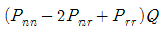
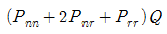
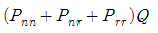
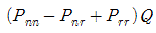
(정답률: 79%)

2. 2[Wb/m2]인 평등 자계 속에 자계와 직각방향으로 높인 길이 30cm인 도선을 자계와 30°각도의 방향으로 30[m/s]의 속도로 이동할 때, 도체 양단에 유기되는 기전력 [V]은?
- 3
- 9
- 30
- 90
(정답률: 77%)
3. 감자력은?
- 자속에 비례한다.
- 자화의 세기에 비례한다.
- 자극의 세기에 반비례한다.
- 자계의 세기에 반비례한다.
(정답률: 61%)
4. 평면도체의 표면에서 a[m]인 거리에 점전하 Q[C]가 있다. 이 전하를 무한원점까지 운반하는데 요하는 일[J]은?
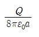
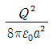
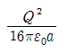
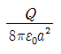
(정답률: 69%)
5. 진공 중에 무한장 직선전하가 단위 길이당 λ[C/m]가 분포되어 있을 때 전하의 중심축에서 r[m] 떨어진 점의 전계의 크기는?
- 거리의 제곱에 비례한다.
- 거리의 제곱에 반비례한다.
- 거리에 비례한다.
- 거리에 반비례한다.
(정답률: 64%)
6. 액체 유전체를 넣은 콘덴서의 용량이 30[㎌]이다. 여기에 500[V]의 전압을 가했을 때 누설전류는 약 얼마 [mA]인가? (단, 고유저항 p는 1011[Ω°m], 비유전율 ℇs는 2.2이다.)
- 5.1
- 7.7
- 10.2
- 15.4
(정답률: 65%)
7. 진공 중에서 폐곡면을 통하여 나가는 전력선의 총 수는 그 내부에 있는 점전하의 대수적 합의 몇 배가 되는가?
- ℇ0
- 1/ℇ0
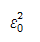
- 1
(정답률: 63%)
8. 평행판 콘덴서에서 전극판 사이의 거리를 1/2로 줄이면 콘덴서의 용량은 처음 값에 비해 어떻게 되는가?
- 1/2로 감소
- 1/4로 감소.
- 2배로 증가
- 4배로 증가
(정답률: 79%)
9. 넓이 4[m2], 간격 1[m]의 진공 평행판 콘덴서에 1[C] 의 전하를 충전하는 경우 평행판 사이의 힘[N]은?
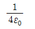
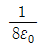
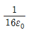
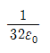
(정답률: 41%)
10. 자계의 세기가 800[AT/m]이고, 자속밀도가 0.2[Wb/m2] 인 재질의 투자율 [H/m]은?
- 2.5 × 10-3
- 4 × 10-3
- 2.5 × 10-4
- 4 × 10-4
(정답률: 65%)
11. 공심 솔레노이드의 내부 자계의 세기가 800[AT/m]일 때, 자속밀도[Wb/m2] 약 얼마인가?
- 1 × 10-3
- 1 × 10-4
- 1 ×10-5
- 1 × 10-6
(정답률: 63%)
12. 전계 E[V/m] 및 자계 H[AT/m]의 에너지가 자유 공간 사이를 C[m/s]의 속도로 전파될 때 단위 시간에 단위 면적을 지나는 에너지[W/m2]는?
- 1/2EH
- EH
- EH2
- E2H
(정답률: 80%)
13. 자유 공간에서 특성 임피던스
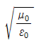
의 값[Ω] 은?- 100π
- 120π
- 1/100π
- 1/200π
(정답률: 82%)
14. 유전체 콘덴서에 전압을 인가할 때 발생하는 현상으로 옳지 않는 것은?
- 속박전하의 변위가 분극전하로 나타난다.
- 유전체면에 나타나는 분극전하 면밀도와 분극의 세기는 같다.
- 유전체 콘덴서는 공기 콘덴서에 비하여 전계의 세기는 작아지고 정전용량은 커진다.
- 단위 면적당의 전기 쌍극자 모멘트가 분극의 세기이다.
(정답률: 50%)
15. 서로 멀리 떨어져 있는 두 도체를 각각 V1, V2, (V1 ≻ V2)의 전위로 충전한 후 가느다란 도선으로 연결하였을 때 그 도선을 흐르는 전하 Q[C]는? (단, C1, C2는 두 도체의 정전용량이라 한다.)
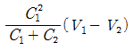
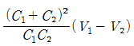
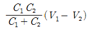
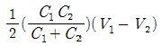
(정답률: 79%)
16. [Ω ㆍ sec]와 같은 단위는?
- F
- F/m
- H
- H/m
(정답률: 70%)
17. 유전율 ℇ1[F/m], ℇ2[F/m]인 두 종류의 유전체가 무한평면을 경계로 접해있다. 유전체에서 경계면으로부터 r[m]만큼 떨어진 점 P에 점전하 Q[C]가 있을 경우, 점전하와 유전체ℇ2[F/m] 사이에 작용하는 힘[N]은?
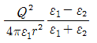
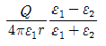
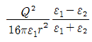
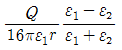
(정답률: 60%)
18. 자유공간 내의 전자파의 진행에서 전계와 자계의 시간적인 위상 관계는?
- 위상이 서로 같다.
- 전계가 자계보다 90도 빠르다.
- 전계가 자계보다 90도 늦다.
- 전계가 자계보다 45도 빠르다.
(정답률: 75%)
19. 20[°C]에서 저항 온도계수가 0.004인 동선의 저항이 100[Ω]이었다. 이 동선의 온도가 80[°C]일 때의 저항[Ω]은?
- 24
- 48
- 72
- 124
(정답률: 46%)
20. 표피 효과에 관한 설명으로 옳지 않은 것은?
- 도체에 교류가 흐르면 표면으로부터 중심으로 들어갈 수록 전류밀도가 작아진다.
- 고주파일수록, 도체의 전도도 및 투자율이 클수록 심하다.
- 도체 내부는 전류의 전도에 거의 관여하지 않으므로 전기 저항이 증가하는 요인이 된다.
- 도체 내의 전류 또는 자속의 분포는 표면에서의 깊이에 대하여 지수함수적으로 증가된다.
(정답률: 56%)
2과목: 전력공학
21. 선로의 특성 임피던스에 대한 설명으로 알맞은 것은?
- 선로의 길이에 반비례한다.
- 선로의 길이에 비례한다.
- 선로의 길이에 관계없이 일정 하다.
- 선로의 길이보다 부하에 따라 변한다.
(정답률: 64%)
22. 수소 냉각 발전기에 대한 설명 중 잘못된 것은?
- 풍손이 감소하고, 발전기 효율이 상승한다.
- 수소는 공기보다 코로나 발생 전압이 낮다.
- 수소는 열전도가 크고 냉각 효과가 높다.
- 발전기는 전폐형으로 습기의 침입이 적다.
(정답률: 55%)
23. 전선 지지점에 고조차가 없는 경간 300[m]인 송전선로가 있다. 이도를 8[m]로 유지할 경우 지지점 간의 전선길이는 약 몇[m]인가?
- 300.1
- 300.3
- 300.6
- 300.9
(정답률: 62%)
24. 가공 배전선로의 부하 분기점에 설치하여 선로고장 발생시 선로의 타 보호기기와 협조하여 고장 구간을 신속하게 개방하는 개폐장치는?
- 고장구간 자동 개폐기
- 자동 선로 구분 개폐기
- 자동 부하 전환 개폐기
- 기중 부하 개폐기
(정답률: 55%)
25. 3상 동기 발전기의 고장 전류를 계산할 때, 영상전류 I0, 정상전류 I1및 역상전류 I2가 같은 경우는 어느 사고로 볼 수 있는가?
- 선간 지락
- 1선 지락
- 2선 단락
- 3상 단락
(정답률: 58%)
26. 소용가측에서 부하의 무효전력 변동분을 흡수하여 플리커의 발생을 방지하는 대책으로 거리가 먼것은?
- 부스터 방식
- 동기 조상기와 리액터 방식
- 사이리스터 이용 콘덴서 방식
- 사이리스터용 리액터 방식
(정답률: 59%)
27. 수전용 변전설비의 1차측에 설치하는 차단기의 용량은 어느 것에 의하여 정하는가?
- 수전전력과 부하율
- 수전계약 용량
- 공급측 전원의 단락 용량
- 부하 설비 용량
(정답률: 73%)
28. 전선 a, b, c가 일직선으로 배치되어 있다. a와 b, b와 c, 사이의 거리가 각각 5m 일 때, 이 선로의 등가 선간 거리는 약 몇[m]인가?
- 5
- 6.3
- 6.7
- 10
(정답률: 59%)
29. 소호 리액터 접지에 대한 설명으로 잘못된 것은?
- 선택 지락 계전기의 작동이 쉽다.
- 과도 안정도가 높다.
- 전자 유도 장애가 경감한다.
- 지락 전류가 작다.
(정답률: 61%)
30. 3상 3선식 복도체 방식의 송전선로를 3상 3선식 단도체 방식 송전선로와 비교한 것으로 알맞은 것은? (단, 단도체의 단면적은 복도체 방식의 소선의 단면적의 합과 같은 것으로 한다.)
- 전선의 인덕턴스는 증가하고, 정전용량은 감소한다.
- 전선의 인덕턴스와 정전용량은 모두 증가한다.
- 전선의 인덕턴스는 감소하고, 정전 용량은 증가한다.
- 전선의 인덕턴스와 정전용량은 모두 감소한다.
(정답률: 74%)
31. 저압 뱅킹 배전방식에서 캐스케이딩 현상이란?
- 전압 동요가 적은 현상
- 변압기의 부하 배분이 불균일한 현상
- 저압선이나 변압기에 고장이 생기면 자동적으로 고장이 제거되는 현상
- 저압선의 고장에 의하여 건전한 변압기의 일부 또는 전부가 차단되는 현상
(정답률: 71%)
32. 배전선로에서 손실 계수 H와 부하율 F사이에 성립하는 것은? (단, 부하울 F≤1이다)
- H ≥ F2
- H ≤ 0
- H = F
- H ≥ F
(정답률: 65%)
33. 배전선로의 접지 목적과 거리가 먼 것은?
- 고장 전류의 크기 억제
- 혼촉, 누전, 접촉에 의한 위험 방지
- 이상전압의 억제, 대지 전압을 저하시켜 보호 장치의 작동 확실
- 피뢰기 등의 뇌해 방지 설비의 보호 효과 향상
(정답률: 63%)
34. 유효 낙차가 40[%] 저하되면, 수차의 효율이 20[%] 저하 된다고 할 경우 이때의 출력은 원래의 약 몇 [%]인가? (단, 안내 날개의 열림은 불변인 것으로 한다.)
- 37.2
- 48.0
- 52.7
- 63.7
(정답률: 39%)
35. 3상이고 표준 전압 3[kV], 600[kW]를 역률 0.85로 수전하는 공장의 수전회로에 시설하는 계기용 변류기의 변류비로 적당한 것은? (단, 변류기의 2차 전류는 5[A]이다.)
- 5
- 10
- 20
- 40
(정답률: 42%)
36. 초호환(arcing ring)의 설치 목적은?
- 애자연의 보호
- 클램프의 보호
- 이상전압 발생의 방지
- 코로나손의 방지
(정답률: 77%)
37. 피뢰기의 구비조건으로 틀린 것은?
- 충격방전 개시전압이 높을 것
- 상용 주파 방전 개시 전압이 높을 것
- 속유의 차단 능력이 충분할 것
- 방전 내량이 크고, 제한 전압이 낮을것
(정답률: 53%)
38. 뒤진 역률 80[%], 1000[kw]의 3상 부하가 있다. 이것에 콘덴서를 설치하여 역률을 95[%]로 개선하려면 콘덴서의 용량은 약 몇[kVA]인가?
- 240
- 420
- 630
- 950
(정답률: 64%)
39. 화력 발전소의 재열기 (reheater)의 목적은?
- 급수를 가열한다.
- 석탄을 건조한다.
- 공기를 예열한다.
- 증기를 가열한다.
(정답률: 64%)
40. 장거리 송전 선로의 특성은 어떤 회로로 다루는 것이 가장 알맞은가?
- 분산부하 회로
- 집중정수 회로
- 분포정수 회로
- 특성 임피던스 회로
(정답률: 74%)
3과목: 전기기기
41. 200 ± 100[V], 5[kVA]인 3상 유도 전압 조정기의 직렬권선의 전류[A]는?
- 약 28.9
- 약 50.1
- 약 57.8
- 약 16.7
(정답률: 41%)
42. 전동기에서 회전력이 작용하는 방향으로 알맞은 것은?
- 인덕턴스가 증가하는 방향
- 자기 저항이 증가하는 방향
- 시스템의 에너지가 증가하는 방향
- 전류가 증가하는 방향
(정답률: 47%)
43. 어떤 유도 전동기가 부하시 슬립(s) 5[%]에서 한상 당 10[A]의 전류를 흘리고 있다. 한상에 대한 회전자 유효저항이 0.1[Ω] 일 때, 3상 회전자 출력 [W]은?
- 190
- 570
- 620
- 780
(정답률: 49%)
44. 3상 유도 전동기의 원선도 작성에 필요한 기본량을 구하기 위한 시험이 아닌것은?
- 충격전압시험
- 저항측정시험
- 무부하시험
- 구속시험
(정답률: 60%)
45. 정격 전압이 120[V]인 직류 분권 전동기가 있다. 전압 변동률이 5[%]인 경우 무부하 단자전압 [V]은?
- 114
- 126
- 132
- 138
(정답률: 61%)
46. 동기 전동기에 관한 설명으로 잘못된 것은?
- 제동권선이 필요하다.
- 난조가 발생하기 쉽다.
- 여자기가 필요하다.
- 역률을 조정할 수 없다.
(정답률: 70%)
47. 10극, 3상 유도 전동기가 있다. 회전자는 3상이고, 정지시의 2차 1상의 전압이 150[V]이다. 이 회전자를 회전자계와 반대방향으로 400[rpm] 회전시키면 2차 전압은? (단, 1차 전원 주파수는 50[hz]이다.)
- 150
- 200
- 250
- 300
(정답률: 51%)
48. 3상 동기 발전기에 무부하 전압보다 90°늦은 전기자 전류가 흐를 때 전기자 반작용은?
- 교차자화 작용을 한다.
- 자기 여자 작용을 한다.
- 감자 작용을 한다.
- 증자 작용을 한다.
(정답률: 75%)
49. 부하 변동이 심한 부하에 직권 전동기를 사용할 때 전기자 반작용을 감소시키기 위해서 설치하는 것은?
- 계자 권선
- 보상 권선
- 브러시
- 균압선
(정답률: 67%)
50. 220[V] 3상 유도 전동기의 전부하 슬립이 4[%]이다. 공급 전압이 10[%] 저하된 경우의 전부하 슬립은?
- 4
- 5
- 6
- 7
(정답률: 40%)
51. 선박의 전기 추진용 전동기의 속도제어에 가장 알맞은 것은?
- 주파수 변화에 의한 제어
- 극수 변화에 의한 제어
- 1차 회전에 의한 제어
- 2차 저항에 의한 제어
(정답률: 70%)
52. 변압기에서 권수가 2배가 되면 유기 기전력은 몇 배가 되는가?
- 0.5
- 1
- 2
- 4
(정답률: 66%)
53. 전기자 도체의 굵기, 권수 및 극수가 다를 때 소전류, 고전압을 얻을 수 있는 권선법은?
- 단중 중권
- 단중 파권
- 균압 접속
- 개로권
(정답률: 69%)
54. 3상 직권 정류자 전동기의 중간 변압기는 고정자 권선과 회전자 권선 사이에 직렬로 접속되는데, 이 중간 변압기를 사용하는 중요한 이유는?
- 경부하시 속도의 급상승 방지를 위하여
- 주파수 변동으로 속도를 조정하기 위하여
- 회전자 상수를 감소하기 위하여
- 역회전을 방지하기 위하여
(정답률: 54%)
55. 3상 동기 발전기의 여자 전류가 5[A]일 때 1상의 유기 기전력은 440[V]이고 3상 단락 전류는 20[A]이다. 이 발전기의 동기 임피던스 [Ω]는?
- 17
- 20
- 22
- 25
(정답률: 59%)
56. 다음 기기 중 공장에서 역률을 개선하려고 할 때 쓰이는 기기가 아닌 것은?
- 동기 조상기
- 콘덴서용 직렬 리액터
- 전력용 콘덴서
- 회전 변류기
(정답률: 58%)
57. 직류 전동기의 정출력 제어를 위한 속도 제어법은?
- 워드 레오너드 제어법
- 전압 제어법
- 계자 제어법
- 전기자 저항 제어법
(정답률: 42%)
58. 변압기의 단락 시험과 관련 없는 것은?
- 권선의 저항
- 임피던스 전압
- 임피던스 와트
- 여자 어드미턴스
(정답률: 66%)
59. 2차 권선이 무부하 상태에서 변압기 여자 전류의 실효값을 결정하는 요소로 바르게 연결된 것은?
- 1차권선 자기 인덕턴스, 1차 단자전압 실효값
- 1차권선 자기 인덕턴스, 2차 유기 기전력
- 2차권선 자기 인덕턴스, 입력전압 실효값
- 2차권선 자기 인덕턴스, 2차 유기 기전력
(정답률: 34%)
60. 2개의 사이리스터로 단상 전파 정류를 하여 90[V]의 직류 전압을 얻는데 필요한 최대 첨두 역전압은 약 얼마[V] 인가?
- 141
- 283
- 365
- 400
(정답률: 55%)
4과목: 회로이론
61. △결선된 저항 부하를 Y결선으로 바꾸면 소비 전력은? (단, 저항과 선간 전압은 일정하다.)
- 3배
- 9배
- 1/9배
- 1/3배
(정답률: 70%)
62. 대칭 3상 Y 부하에서 각상의 임피던스가 3 + j4[Ω]이고, 부하 전류가 20[A]일 때, 이 부하에서 소비되는 전 전력은?
- 1400
- 1600
- 1800
- 3600
(정답률: 53%)
63. 최대치가 100[V], 주파수 60[hz]인 정현파 전압이 t=0에서 순시치가 50[V]이고 이 순간에 전압이 감소하고 있을 경우의 정현파의 순시치 식은?
- 100sin(120πt + 45°)
- 100sin(120πt + 135°)
- 100sin(120πt + 150°)
- 100sin(120πt + 30°)
(정답률: 40%)
64. 두 코일의 자기 인덕턴스가 L1[H], L2[H]이고, 상호 인덕턴스가 M일 때 결합계수 K는?
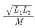
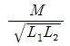
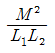
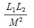
(정답률: 74%)
65. 어떤 회로에서 유효전력 80[W], 무효 전력 60[var]일 때 역률[%]은?
- 50
- 70
- 80
- 90
(정답률: 67%)
66. 대칭 6상 전원이 있다. 환상결선으로 권선에 120[A]의 전류를 흘린다고 하면, 선전류 [A]는?
- 60
- 90
- 120
- 150
(정답률: 66%)
67. R=50[Ω], L=200[mH]의 직렬회로에 주파수 f=50[hz]의 교류에 대한 역률[%]은?
- 82.3
- 72.3
- 62.3
- 52.3
(정답률: 60%)
68. f(t) = 3t2의 라플라스 변환은?
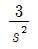
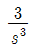
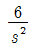
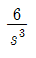
(정답률: 63%)
69. 다음의 회로가 정저항 회로가 되기 위한 C의 값[㎌]은?
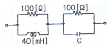
- 4
- 6
- 8
- 10
(정답률: 65%)
70. 전송선로에서 무손실일 때 L=96[mH], C=0.6[㎌]이면, 특성 임피던스[Ω]는?
- 10
- 40
- 100
- 400
(정답률: 65%)
71. 다음의 회로에서 단자 a,b에 걸리는 전압[V]은?
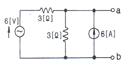
- 12
- 18
- 24
- 6
(정답률: 48%)
72. R-L-C 회로망에서 입력 전압을 ei(t)[V], 출력량을 전류 i(t)[A]로 할 대, 이 요소의 전달함수는?
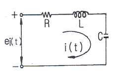
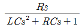
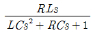
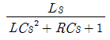
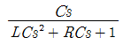
(정답률: 64%)
73. 어떤 회로 소자에 e = 125sin377t[V]를 가했을 때, i = 25sin377t[A]가 흐른다면, 이 소자는?
- 다이오드
- 순저항
- 유도 리액턴스
- 용량 리액턴스
(정답률: 61%)
74. 선간 전압 200[V], 부하 임피던스 24 + j7 [Ω]인 3상 Y결선의 3상 유효전력[W]은?
- 192
- 512
- 1536
- 4608
(정답률: 57%)
75. 다음과 같은 RC회로망에서 입력전압을 ei(t)[V}출력 전압을 e0(t)[V]라 할 때, 이 요소의 전달 함수는? (단, R=100[kΩ], C=10[㎌]D이고, 초기 조건은 0이다.)
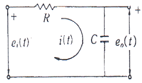
- 1/s+1
- 10/s+1
- 1/10s+1
- 10/10s+1
(정답률: 42%)
76. 저항 30[Ω], 용량성 리액턴스 40[Ω]의 병렬 회로에 120[V]의 정현파 교류 전압을 가할 때 전체 전류[A]는?
- 3
- 4
- 5
- 6
(정답률: 47%)
77. 기본파의 40[%]인 제 3 고조파와 30[%]인 제 5 고조파를 포함하는 전압파의 왜형률은?
- 0.9
- 0.7
- 0.3
- 0.5
(정답률: 65%)
78. 다음과 같은 브리지 회로가 평형이 되기 위한 Z4의 값은?
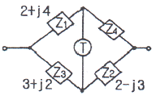
- 2+j4
- -2+j4
- 4+j2
- 4-j2
(정답률: 66%)
79. 어떤 회로망의 4단자 정수가 A=8, B=j2, D=3+j2이면 이 회로망의 C는?
- 2+j3
- 3+j3
- 24+j14
- 8-j11.5
(정답률: 67%)
80. 다음 함수
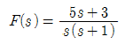
의 역라플라스 변환은?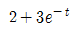
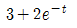
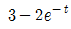
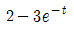
(정답률: 50%)
5과목: 전기설비기술기준 및 판단 기준
81. 가공 전선로의 지지물로서 길이 9m, 설계하중이 6.8kN 이하인 철근 콘크리트주를 시설할 때, 땅에 묻히는 깊이는 몇[m] 이상으로 하여야 하는가?
- 1.2
- 1.5
- 2
- 2.5
(정답률: 52%)
82. 정격 전류가 15A를 넘고 20A이하인 배선용 차단기로 보호되는 저압 옥내전로의 콘센트는 정격전류가 몇[A]이하인 것을 사용하여야 하는가?(오류 신고가 접수된 문제입니다. 반드시 정답과 해설을 확인하시기 바랍니다.)
- 15
- 20
- 30
- 50
(정답률: 54%)
83. 시가지에 시설되어 있는 가공 직류 전차선의 장선에는 가공 직류 전차선간 및 가공 직류 전차선으로부터 60cm 이내의 부분 이외에 접지 공사를 할 때, 몇 종 접지공사를 하여야 하는가?(관련 규정 개정전 문제로 여기서는 기존 정답인 3번을 누르면 정답 처리됩니다. 자세한 내용은 해설을 참고하세요.)
- 제 1종 접지공사
- 제 2종 접지공사
- 제 3종 접지공사
- 특별 제 3종 접지공사
(정답률: 54%)
84. 무선용 안테나 등을 지지하는 철탑의 기초 안전율은 얼마 이상이어야 하는가?
- 1.0
- 1.5
- 2.0
- 2.5
(정답률: 62%)
85. 일반 주택 및 아파트 각 호실의 현관등으로 백열 전등을 설치할 때에는 타임 스위치를 설치하여 몇 분 이내에 소등되는 것이어야 하는가?
- 1
- 2
- 3
- 5
(정답률: 68%)
86. 뱅크 용량이 20000kVA,인 전력용 캐패시터에 자동적으로 전로로부터 차단하는 보호장치를 하려고 한다. 반드시 시설하여야 할 보호장치가 아닌 것은?
- 내부에 고장이 생긴 경우에 동작하는 장치
- 절연유의 압력이 변화할 때 동작하는 장치
- 과전류가 생긴 경우에 동작하는 장치
- 과전압이 생긴 경우에 동작하는 장치
(정답률: 63%)
87. 특고압 가공 전선로를 가공 케이블로 시설하는 경우 잘못된 것은?
- 조가용선에 행거의 간격은 1m로 시설하였다.
- 조가용선 및 케이블의 피복에 사용하는 금속체에는 제 3종 접지공사를 하였다.
- 조가용선은 단면적 22mm2의 아연도강 연선을 사용하였다.
- 조가용선에 접촉시켜 금속 테이프를 간격 20cm 이하의 간격을 유지시켜 나선형으로 감아 붙였다.
(정답률: 54%)
88. 도로 등의 전열장치 시설에 맞지 않는 것은?
- 발열선의 전기 공급은 전로의 대지 전압 300V 이하일 것.
- 콘크리트 기타 견고한 내열성이 있는 것 안에 시설할 것.
- 발열선은 그 온도가 80°C를 넘지 않도록 시설할 것
- 발열선은 다른 약전류 전선 등에 자기적인 장애를 줄 것
(정답률: 65%)
89. 옥내 관등회로의 사용 전압이 1000V를 넘는 네온 방전등 공사로 적합하지 않는 것은?
- 애자 사용 공사에 의한 전선 상호간의 간격은 10cm 이상일 것
- 관등회로의 배선은 전개된 장소 또는 점검할 수 있는 은폐된 장소에 시설할 것
- 네온 변압기 외함에는 제 3종 접지 공사를 할 것
- 애자 사용 공사에 의한 전선의 지지점간의 거리는 1m 이하일 것
(정답률: 42%)
90. 금속관 공사에서 절연 부싱을 사용하는 가장 주된 목적은?
- 관의 끝이 터지는 것을 방지
- 관의 단구에서 조영재의 접촉 방지
- 관내 해충 및 이물질 출입 방지
- 관의 단구에서 전선 피복의 손상 방지
(정답률: 63%)
91. 저압 또는 고압의 가공 전선로와 기설 가공 약전류 전선로가 병행할 때 유도 작용에 의한 통신상의 장해가 생기지 않도록 전선과 기설 약전류 전선간의 이격 거리는 몇 m이상이어야 하는가? (단, 전기 철도용 급전선과 단선식 전화선로는 제외한다.)
- 2
- 3
- 4
- 6
(정답률: 44%)
92. 시가지에 시설하는 특고압 가공전선로의 지지물이 철탑이고 전선이 수평으로 2 이상 있는 경우에 전선 상호간의 간격이 4m 미만일 때에는 특고압 가공 전선로의 경간은 몇 m 이하이어야 하는가?
- 100
- 150
- 200
- 250
(정답률: 37%)
93. 특고압 가공전선과 지지물, 완금류, 지주 또는 지선 사이의 이격거리는 사용전압 15000V 인 경우 일반적으로 몇 cm 이상이어야 하는가?(오류 신고가 접수된 문제입니다. 반드시 정답과 해설을 확인하시기 바랍니다.)
- 15
- 30
- 50
- 80
(정답률: 32%)
94. 중성점 직접 접지식으로서 최대 사용전압이 161000V 인 변압기 권선의 절연 내력 시험 전압은 몇 V 인가?
- 103040
- 115920
- 148120
- 177100
(정답률: 43%)
95. 전기 울타리 시설에 대한 설명으로 알맞은 것은?
- 전기 울타리는 사람이 쉽게 출입할 수 있는 곳에 시설할 것
- 전기 울타리용 전원 장치에 전기를 공급하는 전로의 사용 전압은 600V 미만일 것
- 전선과 이를 지지하는 기둥 사이의 이격 거리는 2.5cm 이상일 것
- 전선과 수목 사이의 이격 거리는 40cm 이상일 것
(정답률: 53%)
96. 사용 전압이 440V 인 이동 기중기용 접촉 전선을 애자사용 공사에 의하여 옥내의 전개된 장소에 시설하는 경우 사용하는 전선으로 옳은 것은?
- 인장강도가 3.44kN 이상인 것 또는 지름 2.6mm의 경동선으로 단면적이 8mm2 이상인 것
- 인장강도가 3.44kN 이상인 것 또는 지름 3.2mm의 경동선으로 단면적이 18mm2 이상인 것
- 인장강도가 11.2kN 이상인 것 또는 지름 6mm의 경동선으로 단면적이 28mm2 이상인 것
- 인장강도가 11.2kN 이상인 것 또는 지름 8mm의 경동선으로 단면적이 18mm2 이상인 것
(정답률: 48%)
97. 저압 전로에서 그 전로에 지락이 생긴 경우에 0.5초 이내에 자동적으로 전로를 차단하는 장치를 시설하는 경우, 특별 제 3종 접지공사의 접지 저항 값은 자동 차단기의 정격 감도 전류가 30mA 일 때 몇 [Ω]이하로 하여야 하는가?
- 75
- 150
- 300
- 500
(정답률: 37%)
98. 고압과 저압 전로를 결합하는 변압기 저압측의 중성점에는 제 2종 접지공사를 변압기의 시설 장소마다 하여야 하나 부득이하여 가공 공동 지선을 설치하여 공통의 접지공사로 하는 경우 각 변압기를 중심으로 하는 지름 몇 m 이내의 지역에 시설하여야 하는가?
- 400
- 500
- 600
- 800
(정답률: 44%)
99. 사람이 접촉할 우려가 있는 제 1종 또는 제 2종 접지공사에서 지하 75cm로부터 지표상 2m 까지의 접지선은 사람의 접촉 우려가 없도록 하기 위하여 어느 것을 사용하여 보호하는가?
- 두께 1mm 이상의 콤바인덕트관
- 두께 2mm 이상의 합성 수지관
- 피막의 두께가 균일한 비닐 포장지
- 이음 부분이 없는 플로어덕트
(정답률: 60%)
100. 지중 전선로를 직접 매설식에 의하여 시설할 때, 중량물의 압력을 받을 우려가 있는 장소에 지중 전선을 견고한 트라프 기타 방호물에 넣지 않고도 부설할 수 있는 케이블은?
- 염화비닐 절연 케이블
- 폴리 에틸렌 외장 케이블
- 콤바인 덕트 케이블
- 알루미늄피 케이블
(정답률: 69%)
V = (1/4πε₀) * (Q/r - (-Q/n))
= (1/4πε₀) * Q * (1/r + 1/n)
여기서 ε₀는 진공의 유전율이고, Q는 전하량, r과 n은 각각 도체의 위치를 나타냅니다. 따라서 전위 계수는 Q * (1/r + 1/n)이 됩니다.
정답은 ""입니다. 이유는 전위 계수에서 Q가 양수이므로, 1/r + 1/n이 양수일 때 전위차가 양수가 됩니다. 따라서 r과 n이 모두 양수이거나 모두 음수일 때 전위차가 양수가 됩니다. 이 조건을 만족하는 보기는 ""뿐입니다.